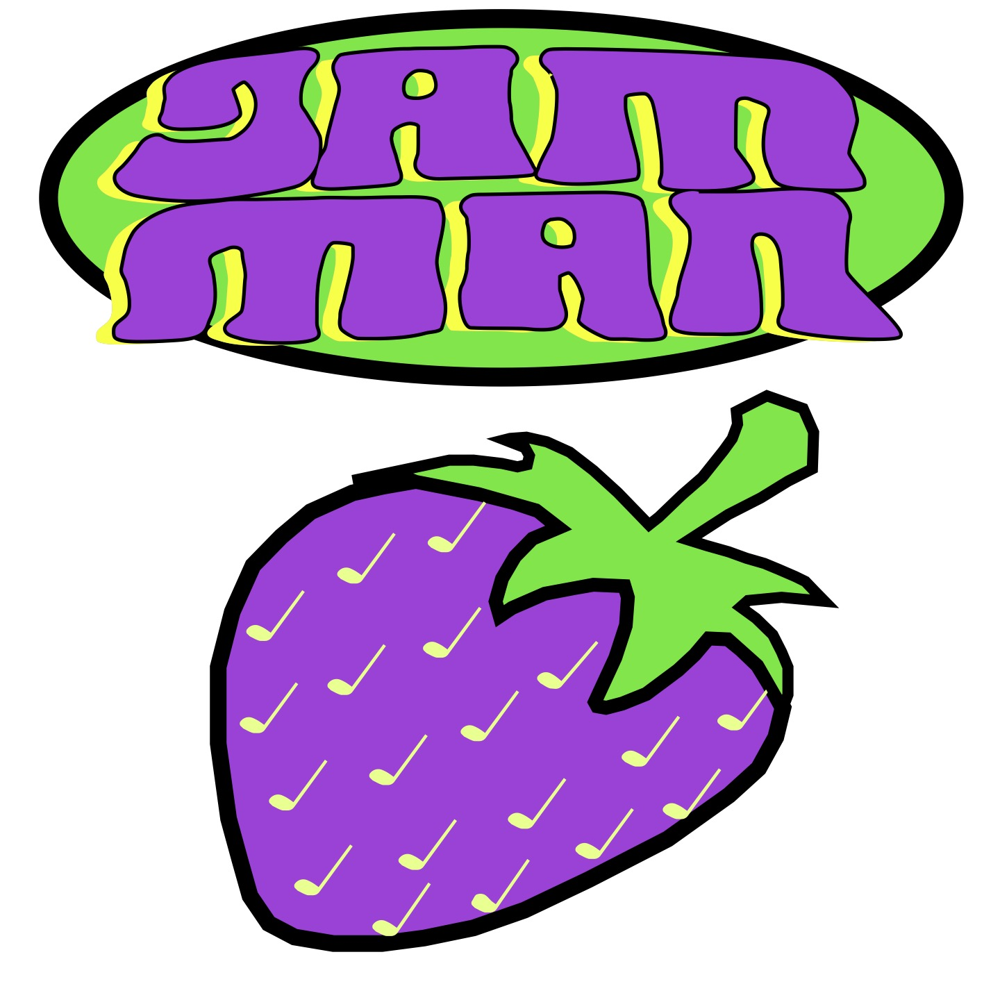

Example Logo

Jam Man is a playful visual identity developed by combining hand-drawn conceptual sketches with digital illustration techniques in Adobe Illustrator. This project explores bold typography, exaggerated shapes, and retro-inspired cartoon imagery to create a distinctive and recognizable logo. Featuring oversized purple lettering and a stylized strawberry illustration, the design uses a vibrant palette of purple, green, yellow, and black to create a colorful, energetic aesthetic. The logo was conceptualized and developed from the initial sketches into a finished SVG design.
This project also explores the versatility of the visual identity through a complete logo package, including alternate color variations, simplified black-and-white treatments, and merchandise mockups. The branding was applied to a T-shirt, baseball cap, and tote bag to demonstrate how the design translates across different formats and products.